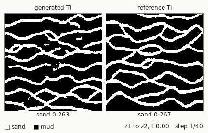
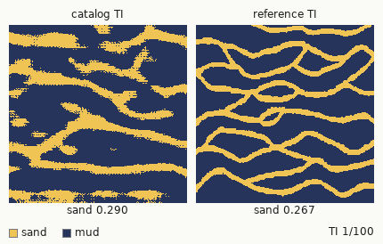
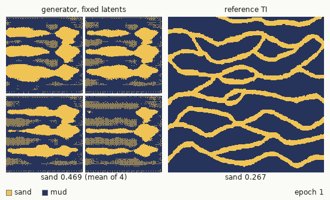
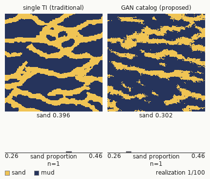

Workflow
Animations




Results
| Set | n | Mean | Std | Min | Max |
|---|---|---|---|---|---|
| Reference TI | 1 | 0.2674 | |||
| Catalog TIs | 100 | 0.2723 | 0.0153 | 0.229 | 0.321 |
| Realizations, single TI (baseline) | 100 | 0.2945 | 0.0264 | 0.2292 | 0.3545 |
| Realizations, GAN catalog | 100 | 0.2890 | 0.0314 | 0.2044 | 0.3644 |
Table 1. Sand proportion in this repository's re-run (seed 69096, 6,000 generator steps on a laptop RTX 5090, checkpoint of step 5,000, 100 catalog TIs, 100 realizations per workflow). These are not the paper's figures.
The generator reproduces the reference TI. Catalog TIs hold 0.272 sand on average against 0.267 in the reference, 99 of 100 lie within 0.05 of it, and their x and y indicator variograms (lags 1 to 50) differ from the reference's by 2% on average. Both workflows simulate from 250x250 TIs at the same pixel scale.
Realizations of both workflows hold more sand than the reference (0.29 against 0.27). The 50 wells hold 44% sand, and SNESIM runs without a servosystem, as in the paper's parameter file.
The catalog realizations spread more than the baseline: a standard deviation of 0.0314 against 0.0264, a variance ratio of 1.42. An F-test gives a one-sided p of 0.04, but Levene's test gives p = 0.15, and a bootstrap 95% interval for the ratio of standard deviations spans 0.99 to 1.43. The mean per-cell standard deviation is the same in both workflows (0.444 and 0.443). A 3,500-step checkpoint of the same configuration gave equal spreads (0.0267 against 0.0264). The re-run agrees with the paper in direction; with 100 realizations per workflow, the margin stays within sampling noise.
Reproduce
Install mise; it provides Python 3.11. The setup step installs torch 2.11 from the CUDA 12.8 wheel index, which RTX 50-series GPUs require (the code falls back to the CPU), and boitata, whose SNESIM runs on Linux, macOS and Windows. On a laptop RTX 5090, training takes about 11 min and SNESIM about 15 s for both workflows. Nothing pretrained ships, so every artifact regenerates. GPU training is not bit-reproducible (cuDNN autotuning and bf16 arithmetic), so a rerun with the same seed keeps a different checkpoint and gives slightly different numbers.
mise run setup # .venv and dependencies mise run train # WGAN-GP mise run sample # the TI catalog mise run snesim # realizations plus the single-TI baseline mise run gifs # docs/*.gif mise run check # shape and facies-proportion assertions
The train, sample, snesim and gifs tasks take --seed (default 69096). Run mise run <task> -- --help for the flags.
Differences from the 2022 code
- The generator is fully convolutional with a spatial latent (a 64-channel grid; Jetchev et al. 2016, Laloy et al. 2018). It trains on random 128x128 crops of the reference TI at its own pixel scale, mirrored at random in x and y, and samples 250x250 TIs from an 8x8 latent grid. The old chain (150x150 window, resize to 128, resize to 256, resize to 250, resize to 150) is gone, and catalog TIs have the reference's size.
- Training follows Gulrajani et al. (2017): the two-sided gradient penalty
(||grad|| - 1)^2(the old code penalised||grad||^2), Adam with lr 1e-4 and betas (0, 0.9), 5 critic steps per generator step. The old loop also leaked generator-loss gradients into the next critic step; that is fixed. - The critic sees DiffAugment inputs (Zhao et al. 2020): the same random translation (up to 16 px) and cutout (64x64) applied to real and generated crops. Without it the critic memorised the single training image; its Wasserstein estimate climbed past 270 and the samples degraded after step 6,000.
- Training runs for 6,000 generator steps in about 11 min; the old code made 1,600 (50 epochs) in about 2 h. Batches are cropped on the GPU (no image files or data loader), with bf16 autocast, TF32 and a smaller network. Nearest-upsampling convolutions replace transposed ones. Test runs reached their best score between steps 3,000 and 6,000 and drifted after.
- The sampled generator is an exponential moving average (0.999) of the trained weights. Every 500 steps the training scores it on 32 TIs of 250x250 against the reference (sand proportion plus x and y indicator variograms to lag 50) and keeps the best checkpoint as
checkpoints/generator.ckpt. - The generator output is binarised at 0 (the middle of tanh), not 0.5.
- The SSIM ≥ 0.9 filter in sampling is gone. A dtype bug meant it never filtered, and the SSIM between independent TIs is at most about 0.3.
- SNESIM is boitata's, in place of GSLIB's
snesim.exe, with the settings of the paper's parameter file: 30 conditioning cells, 6 multigrids, at least 10 replicates, no servosystem. On the same TIs and wells it ran the baseline in 1.2 s instead of 574 s and the catalog in 11 s instead of 661 s. Both honour every well datum. boitata's realizations hold about 0.05 less sand thansnesim.exe's (0.295 against 0.347 for the baseline). A well at integer coordinate x goes to cell x - 1, as insnesim.exe.
Cite
@article{scholze2023gan,
author = {Scholze, Gustavo Pretto and Bassani, Marcel Antonio Arcari and Costa, Jo{\~a}o Felipe Coimbra Leite},
title = {Generative Adversarial Networks to incorporate the Training Image uncertainty in multiple-point statistics simulation},
journal = {Geoenergy Science and Engineering},
volume = {230},
pages = {212257},
year = {2023},
doi = {10.1016/j.geoen.2023.212257}
}